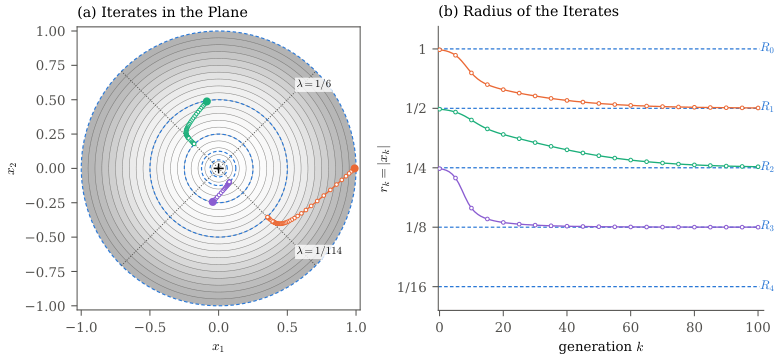

The main lemma, stability theorems, corollary, and basin-of-attraction theorem are machine-checked in Lean 4 with Mathlib, with a public GitHub/Zenodo artifact.
Abstract
The multivariate breeder's equation $Δ\bar z=G\nabla\ln\bar W$ is a widely used discrete-time modified-gradient system describing the evolution of continuous traits in organisms. This system could more conventionally be expressed as $x_{k+1}=x_k+P_k\nabla f(x_k)$. For its continuous-time counterpart $x'=P(t)\nabla f(x)$, it has been proven that an isolated local maximum of $f$ is uniformly stable whenever $P(t)$ is positive semidefinite, as is the case for the "$G$-matrix." Furthermore, the continuous time system is uniformly asymptotically stable when the maximum is an isolated critical point and $\int_0^\inftyλ_1(P(t))\,dt=\infty$. We show that the literal discrete analog of this result is false: with constant positive definite $P$ the iterates can oscillate or diverge. The result is restored by a single additional hypothesis, a uniform bound on the largest eigenvalue of $P_k$, $λ_n$, such that $λ_n(P_k)\le 2/L$ where $L$ is a local Lipschitz constant of $\nabla f$. Under this bound the maximum is uniformly stable; under a stricter version together with $\sum_kλ_1(P_k)=\infty$, the maximum is uniformly asymptotically stable. Given these hypotheses, a level-set estimate of the basin of attraction carries over. Both bounds are sharp, and each remaining hypothesis is shown to be necessary. Biologically, the bound says that genetic variance in every direction must be small relative to the curvature of log mean fitness; outside this regime the mean phenotype can overshoot a fitness peak as hypothesized by Fisher's geometric model. As further application of our results, the same conditions apply to the mean update of Gaussian evolutionary optimization algorithms, in which the covariance of the search population plays the role of $G$.
Problem
For the continuous-time modified-gradient system x'=P(t)∇f(x) with positive semidefinite P, isolated local maxima of f are known to be uniformly stable. The question is whether this carries over to the discrete-time recursion x_{k+1}=x_k+P_k∇f(x_k), which models the multivariate breeder's equation.
Approach
A one-dimensional quadratic counterexample shows that the discrete analog can converge, oscillate, or diverge. A matrix-step descent lemma for Lipschitz gradients serves as a discrete Lyapunov decrease. With it, stability is proved under a step-size bound λ_n(P_k) ≤ 2/L, and asymptotic stability under a stricter bound plus divergence of Σλ_1(P_k). A level-set basin-of-attraction estimate is also proved, and the key results are formalized in Lean 4 with Mathlib.
Results
Uniform stability holds when LΛ≤2, and uniform asymptotic stability holds when LΛ≤2−η together with Σλ_1(P_k)=∞. Both bounds are sharp, and each remaining hypothesis is shown to be necessary by counterexamples. The results are interpreted for genetic variance relative to the curvature of log mean fitness and for Gaussian evolutionary optimization algorithms.

Figure 5: Iterates of Example 7.2 . (a) Level curves of f(x)=p(|x|) on the unit disk; dashed circles are the rings of critical points r=R_{n}=2^{-n} , n=0,\dots,4 . + marks the maximum \bar{x}=0 . In this example P_{k}=\frac{1}{114}\bigl(\begin{smallmatrix}10&9\\ 9&10\end{smallmatrix}\bigr) , and dotted lines are the eigendirections of P (eigenvalues 1/6 and 1/114 ). Each trajectory starts just in
pa = LΛ
Behavior of x_k
Dynamics
0<pa<2
x_k→0 geometrically
Uniformly asymptotically stable
pa=2
period-2 orbit
Uniformly stable, not asymptotically stable
pa>2
\
x_k\
→∞
Unstable
Dynamics of the 1D quadratic example x_{k+1}=(1-pa)x_k